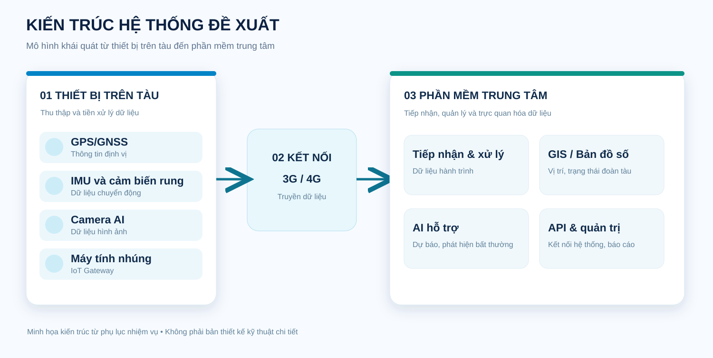
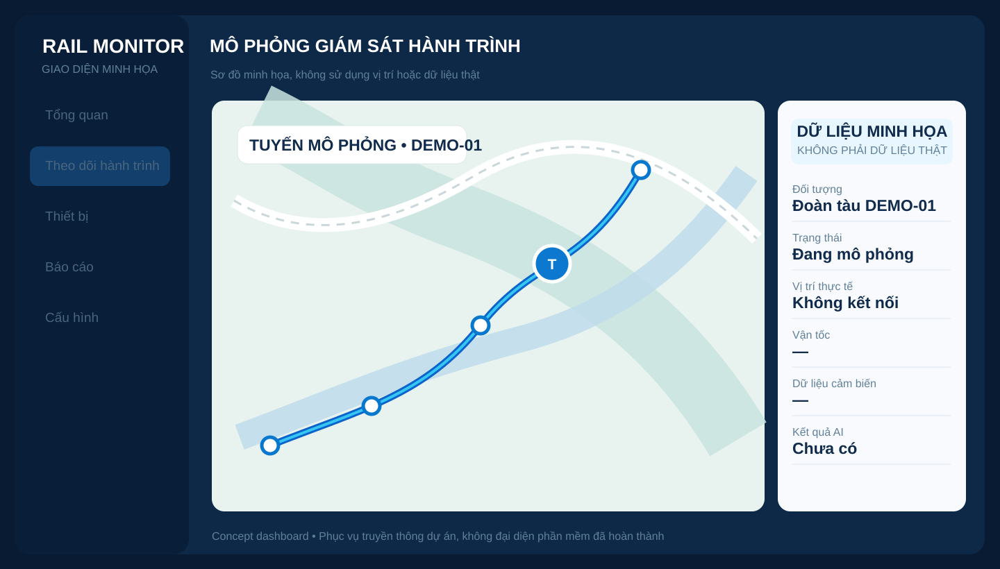

01 / DATA
Internet of Things (IoT)
Thu thập và tiền xử lý dữ liệu từ các thiết bị trên tàu, hỗ trợ truyền dữ liệu về trung tâm thông qua kết nối 3G/4G.
GPS / GNSSIMUCamera AI
Nghiên cứu hệ thống theo dõi, giám sát hành trình đoàn tàu theo thời gian thực, ứng dụng IoT, GIS và AI để hỗ trợ quản lý và điều hành vận tải đường sắt.
Hướng tới khả năng quan sát hành trình đoàn tàu tập trung, trực quan và liên tục trên một nền tảng bản đồ số.
Dự án tập trung nghiên cứu giải pháp tích hợp dữ liệu từ các thiết bị lắp đặt trên tàu với hệ thống phần mềm trung tâm. Thông tin vị trí, trạng thái hoạt động và dữ liệu cảm biến được thu thập, tiền xử lý, truyền tải và trực quan hóa, nhằm phục vụ công tác quản lý, giám sát và điều hành đường sắt.
Sự kết hợp của cảm biến kết nối, bản đồ số và trí tuệ nhân tạo là nền tảng nghiên cứu của giải pháp.
Thu thập và tiền xử lý dữ liệu từ các thiết bị trên tàu, hỗ trợ truyền dữ liệu về trung tâm thông qua kết nối 3G/4G.
Biểu diễn vị trí, hành trình và trạng thái đoàn tàu trên bản đồ số, tạo giao diện trực quan cho công tác theo dõi.
Nghiên cứu các phương pháp hỗ trợ dự báo thời gian đi/đến ga, phát hiện bất thường và hỗ trợ điều hành.
Kiến trúc định hướng kết nối thiết bị đo trên đoàn tàu, mạng truyền thông di động và phần mềm trung tâm phục vụ giám sát, xử lý, phân tích dữ liệu.

Các nhóm chức năng được xác định từ yêu cầu khoa học và kỹ thuật của nhiệm vụ.
Thu thập vị trí và hỗ trợ giám sát hành trình đoàn tàu theo thời gian thực.
Kết nối dữ liệu định vị, IMU, cảm biến rung và camera AI từ thiết bị trên tàu.
Hiển thị vị trí, hành trình, trạng thái và hỗ trợ tra cứu trên bản đồ số.
Nghiên cứu dự báo thời gian đi/đến, phát hiện dấu hiệu bất thường.
Hướng tới trao đổi dữ liệu với hệ thống điều hành vận tải hiện có qua API.
Hỗ trợ quản lý người dùng, tra cứu, thống kê và tổng hợp thông tin.
Mô hình minh họa cho cách phần mềm có thể tổ chức dữ liệu hành trình, vị trí và trạng thái đoàn tàu để phục vụ theo dõi và điều hành.

DEMO · KHÔNG PHẢI DỮ LIỆU THỰCCác chỉ tiêu dưới đây trích từ phụ lục nhiệm vụ nghiên cứu; không hàm ý đã hoàn thành hoặc nghiệm thu.
Theo dõi, giám sát hành trình đoàn tàu theo thời gian thực và trực quan hóa trên nền bản đồ số, ứng dụng IoT, GIS và AI.
SẢN PHẨM CÔNG NGHỆ ĐỊNH HƯỚNG01 bài hướng tới WoS/Scopus và 02 bài thuộc danh mục được tính điểm của Hội đồng Giáo sư Nhà nước.
Giải pháp công nghệ; phân tích thiết kế; hướng dẫn sử dụng; báo cáo thử nghiệm.
Đánh giá thực tế với tối thiểu 02 đoàn tàu và 02 tuyến đường sắt.
Hỗ trợ đào tạo trong các chuyên ngành Công nghệ thông tin, Điện tử - Viễn thông, Tự động hóa.
Phụ lục còn có yêu cầu đăng ký bảo hộ quyền sở hữu trí tuệ. Trạng thái của các sản phẩm cần được cập nhật từ nhóm thực hiện trước khi công bố thành tựu.
Giải pháp hướng tới hỗ trợ các đơn vị quản lý và điều hành vận tải tiếp cận dữ liệu hành trình tập trung, nâng cao khả năng quan sát, hỗ trợ điều độ và tạo cơ sở cho nghiên cứu ứng dụng AI trong vận tải đường sắt.
Đồng hành cùng hoạt động nghiên cứu, phát triển và ứng dụng công nghệ số trong lĩnh vực giao thông đường sắt.
Thông tin đơn vị chủ trì và đầu mối liên hệ sẽ được cập nhật sau khi được xác nhận chính thức.
Về đầu trang